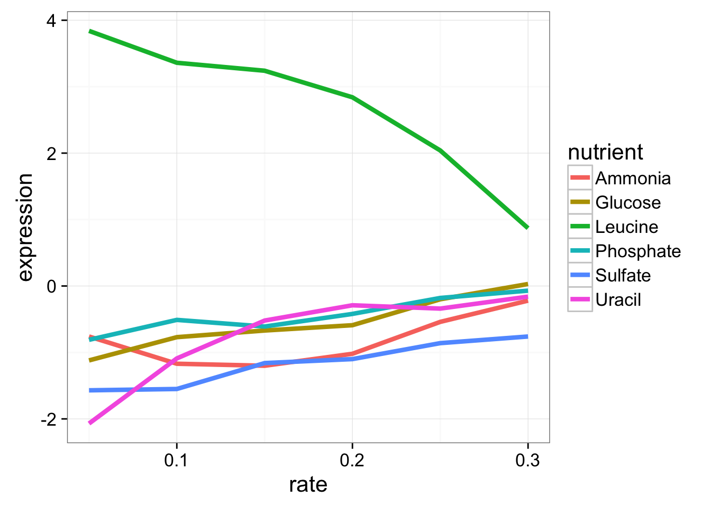
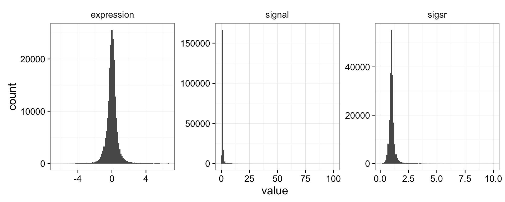

Data Manipulation with dplyr
Data analysis involves a large amount of janitor work – munging and cleaning data to facilitate downstream data analysis. This lesson demonstrates techniques for advanced data manipulation and analysis with the split-apply-combine strategy. We will use the dplyr package in R to effectively manipulate and conditionally compute summary statistics over subsets of a “big” dataset containing many observations.
This lesson assumes a basic familiarity with R and data frames.
Review
Our data
We’re going to use the yeast gene expression dataset described on the data frames lesson. This is a cleaned up version of a gene expression dataset from Brauer et al. Coordination of Growth Rate, Cell Cycle, Stress Response, and Metabolic Activity in Yeast (2008) Mol Biol Cell 19:352-367. This data is from a gene expression microarray, and in this paper the authors are examining the relationship between growth rate and gene expression in yeast cultures limited by one of six different nutrients (glucose, leucine, ammonium, sulfate, phosphate, uracil). If you give yeast a rich media loaded with nutrients except restrict the supply of a single nutrient, you can control the growth rate to any rate you choose. By starving yeast of specific nutrients you can find genes that:
- Raise or lower their expression in response to growth rate. Growth-rate dependent expression patterns can tell us a lot about cell cycle control, and how the cell responds to stress. The authors found that expression of >25% of all yeast genes is linearly correlated with growth rate, independent of the limiting nutrient. They also found that the subset of negatively growth-correlated genes is enriched for peroxisomal functions, and positively correlated genes mainly encode ribosomal functions.
- Respond differently when different nutrients are being limited. If you see particular genes that respond very differently when a nutrient is sharply restricted, these genes might be involved in the transport or metabolism of that specific nutrient.
You can download the cleaned up version of the data at the link above. The file is called brauer2007_tidy.csv. Later on we’ll actually start with the original raw data (minimally processed) and manipulate it so that we can make it more amenable for analysis.
Reading in data
We need to load both the dplyr and readr packages for efficiently reading in and displaying this data. We’re also going to use many other functions from the dplyr package. Make sure you have these packages installed as described on the setup page.
# Load packages
library(readr)
library(dplyr)
# Read in data
ydat <- read_csv(file="data/brauer2007_tidy.csv")
# Display the data
ydat
# Optionally, bring up the data in a viewer window
# View(ydat)## Source: local data frame [198,430 x 7]
##
## symbol systematic_name nutrient rate expression
## (chr) (chr) (chr) (dbl) (dbl)
## 1 SFB2 YNL049C Glucose 0.05 -0.24
## 2 NA YNL095C Glucose 0.05 0.28
## 3 QRI7 YDL104C Glucose 0.05 -0.02
## 4 CFT2 YLR115W Glucose 0.05 -0.33
## 5 SSO2 YMR183C Glucose 0.05 0.05
## 6 PSP2 YML017W Glucose 0.05 -0.69
## 7 RIB2 YOL066C Glucose 0.05 -0.55
## 8 VMA13 YPR036W Glucose 0.05 -0.75
## 9 EDC3 YEL015W Glucose 0.05 -0.24
## 10 VPS5 YOR069W Glucose 0.05 -0.16
## .. ... ... ... ... ...
## Variables not shown: bp (chr), mf (chr)The dplyr package
The dplyr package is a relatively new R package that makes data manipulation fast and easy. It imports functionality from another package called magrittr that allows you to chain commands together into a pipeline that will completely change the way you write R code such that you’re writing code the way you’re thinking about the problem.
When you read in data with the readr package (read_csv()) and you had the dplyr package loaded already, the data frame takes on this “special” class of data frames called a tbl, which you can see with class(ydat). If you have other “regular” data frames in your workspace, the tbl_df() function will convert it into the special dplyr tbl that displays nicely (e.g.: iris <- tbl_df(iris)). You don’t have to turn all your data frame objects into tbl_df objects, but it does make working with large datasets a bit easier.
dplyr verbs
The dplyr package gives you a handful of useful verbs for managing data. On their own they don’t do anything that base R can’t do. Here are some of the single-table verbs we’ll be working with in this lesson (single-table meaning that they only work on a single table – contrast that to two-table verbs used for joining data together, which we’ll cover in a later lesson).
filter()select()mutate()arrange()summarize()group_by()
They all take a data.frame or tbl_df as their input for the first argument, and they all return a data.frame or tbl_df as output.
filter()
If you want to filter rows of the data where some condition is true, use the filter() function.
- The first argument is the data frame you want to filter, e.g.
filter(mydata, .... - The second argument is a condition you must satisfy, e.g.
filter(ydat, symbol == "LEU1"). If you want to satisfy all of multiple conditions, you can use the “and” operator,&. The “or” operator|(the pipe character, usually shift-backslash) will return a subset that meet any of the conditions.
==: Equal to!=: Not equal to>,>=: Greater than, greater than or equal to<,<=: Less than, less than or equal to
Let’s try it out. For this to work you have to have already loaded the dplyr package. Let’s take a look at LEU1, a gene involved in leucine synthesis.
# First, make sure you've loaded the dplyr package
library(dplyr)
# Look at a single gene involved in leucine synthesis pathway
filter(ydat, symbol == "LEU1")## Source: local data frame [36 x 7]
##
## symbol systematic_name nutrient rate expression bp
## (chr) (chr) (chr) (dbl) (dbl) (chr)
## 1 LEU1 YGL009C Glucose 0.05 -1.12 leucine biosynthesis
## 2 LEU1 YGL009C Glucose 0.10 -0.77 leucine biosynthesis
## 3 LEU1 YGL009C Glucose 0.15 -0.67 leucine biosynthesis
## 4 LEU1 YGL009C Glucose 0.20 -0.59 leucine biosynthesis
## 5 LEU1 YGL009C Glucose 0.25 -0.20 leucine biosynthesis
## 6 LEU1 YGL009C Glucose 0.30 0.03 leucine biosynthesis
## 7 LEU1 YGL009C Ammonia 0.05 -0.76 leucine biosynthesis
## 8 LEU1 YGL009C Ammonia 0.10 -1.17 leucine biosynthesis
## 9 LEU1 YGL009C Ammonia 0.15 -1.20 leucine biosynthesis
## 10 LEU1 YGL009C Ammonia 0.20 -1.02 leucine biosynthesis
## .. ... ... ... ... ... ...
## Variables not shown: mf (chr)# Optionally, bring that result up in a View window
# View(filter(ydat, symbol == "LEU1"))
# Look at multiple genes
filter(ydat, symbol=="LEU1" | symbol=="ADH2")## Source: local data frame [72 x 7]
##
## symbol systematic_name nutrient rate expression bp
## (chr) (chr) (chr) (dbl) (dbl) (chr)
## 1 LEU1 YGL009C Glucose 0.05 -1.12 leucine biosynthesis
## 2 ADH2 YMR303C Glucose 0.05 6.28 fermentation*
## 3 LEU1 YGL009C Glucose 0.10 -0.77 leucine biosynthesis
## 4 ADH2 YMR303C Glucose 0.10 5.81 fermentation*
## 5 LEU1 YGL009C Glucose 0.15 -0.67 leucine biosynthesis
## 6 ADH2 YMR303C Glucose 0.15 5.64 fermentation*
## 7 LEU1 YGL009C Glucose 0.20 -0.59 leucine biosynthesis
## 8 ADH2 YMR303C Glucose 0.20 5.10 fermentation*
## 9 LEU1 YGL009C Glucose 0.25 -0.20 leucine biosynthesis
## 10 ADH2 YMR303C Glucose 0.25 1.89 fermentation*
## .. ... ... ... ... ... ...
## Variables not shown: mf (chr)# Look at LEU1 expression at a low growth rate due to nutrient depletion
# Notice how LEU1 is highly upregulated when leucine is depleted!
filter(ydat, symbol=="LEU1" & rate==.05)## Source: local data frame [6 x 7]
##
## symbol systematic_name nutrient rate expression bp
## (chr) (chr) (chr) (dbl) (dbl) (chr)
## 1 LEU1 YGL009C Glucose 0.05 -1.12 leucine biosynthesis
## 2 LEU1 YGL009C Ammonia 0.05 -0.76 leucine biosynthesis
## 3 LEU1 YGL009C Phosphate 0.05 -0.81 leucine biosynthesis
## 4 LEU1 YGL009C Sulfate 0.05 -1.57 leucine biosynthesis
## 5 LEU1 YGL009C Leucine 0.05 3.84 leucine biosynthesis
## 6 LEU1 YGL009C Uracil 0.05 -2.07 leucine biosynthesis
## Variables not shown: mf (chr)# But expression goes back down when the growth/nutrient restriction is relaxed
filter(ydat, symbol=="LEU1" & rate==.3)## Source: local data frame [6 x 7]
##
## symbol systematic_name nutrient rate expression bp
## (chr) (chr) (chr) (dbl) (dbl) (chr)
## 1 LEU1 YGL009C Glucose 0.3 0.03 leucine biosynthesis
## 2 LEU1 YGL009C Ammonia 0.3 -0.22 leucine biosynthesis
## 3 LEU1 YGL009C Phosphate 0.3 -0.07 leucine biosynthesis
## 4 LEU1 YGL009C Sulfate 0.3 -0.76 leucine biosynthesis
## 5 LEU1 YGL009C Leucine 0.3 0.87 leucine biosynthesis
## 6 LEU1 YGL009C Uracil 0.3 -0.16 leucine biosynthesis
## Variables not shown: mf (chr)# Show only stats for LEU1 and Leucine depletion.
# LEU1 expression starts off high and drops
filter(ydat, symbol=="LEU1" & nutrient=="Leucine")## Source: local data frame [6 x 7]
##
## symbol systematic_name nutrient rate expression bp
## (chr) (chr) (chr) (dbl) (dbl) (chr)
## 1 LEU1 YGL009C Leucine 0.05 3.84 leucine biosynthesis
## 2 LEU1 YGL009C Leucine 0.10 3.36 leucine biosynthesis
## 3 LEU1 YGL009C Leucine 0.15 3.24 leucine biosynthesis
## 4 LEU1 YGL009C Leucine 0.20 2.84 leucine biosynthesis
## 5 LEU1 YGL009C Leucine 0.25 2.04 leucine biosynthesis
## 6 LEU1 YGL009C Leucine 0.30 0.87 leucine biosynthesis
## Variables not shown: mf (chr)# What about LEU1 expression with other nutrients being depleted?
filter(ydat, symbol=="LEU1" & nutrient=="Glucose")## Source: local data frame [6 x 7]
##
## symbol systematic_name nutrient rate expression bp
## (chr) (chr) (chr) (dbl) (dbl) (chr)
## 1 LEU1 YGL009C Glucose 0.05 -1.12 leucine biosynthesis
## 2 LEU1 YGL009C Glucose 0.10 -0.77 leucine biosynthesis
## 3 LEU1 YGL009C Glucose 0.15 -0.67 leucine biosynthesis
## 4 LEU1 YGL009C Glucose 0.20 -0.59 leucine biosynthesis
## 5 LEU1 YGL009C Glucose 0.25 -0.20 leucine biosynthesis
## 6 LEU1 YGL009C Glucose 0.30 0.03 leucine biosynthesis
## Variables not shown: mf (chr)Let’s look at this graphically. Don’t worry about what these commands are doing just yet - we’ll cover that later on when we talk about ggplot2. Here’s I’m taking the filtered dataset containing just expression estimates for LEU1 where I have 36 rows (one for each of 6 nutrients \(\times\) 6 growth rates), and I’m piping that dataset to the plotting function, where I’m plotting rate on the x-axis, expression on the y-axis, mapping the value of nutrient to the color, and using a line plot to display the data.
library(ggplot2)
filter(ydat, symbol=="LEU1") %>%
ggplot(aes(rate, expression, colour=nutrient)) + geom_line(lwd=1.5)
Look closely at that! LEU1 is highly expressed when starved of leucine because the cell has to synthesize its own! And as the amount of leucine in the environment (the growth rate) increases, the cell can worry less about synthesizing leucine, so LEU1 expression goes back down. Consequently the cell can devote more energy into other functions, and we see other genes’ expression very slightly raising.
EXERCISE 1
- Display the data where the gene ontology biological process (the
bpvariable) is “leucine biosynthesis” (case-sensitive) and the limiting nutrient was Leucine. (Answer should return a 24-by-7 data frame – 4 genes \(\times\) 6 growth rates). - Gene/rate combinations had high expression (in the top 1% of expressed genes)? Hint: see
?quantileand tryquantile(ydat$expression, probs=.99)to see the expression value which is higher than 99% of all the data, thenfilter()based on that. Try wrapping your answer with aView()function so you can see the whole thing. What does it look like those genes are doing? Answer should return a 1971-by-7 data frame.
Aside: Writing Data to File
What we’ve done up to this point is read in data from a file (read_csv(...)), and assigning that to an object in our workspace (ydat <- ...). When we run operations like filter() on our data, consider two things:
- The
ydatobject in our workspace is not being modified directly. That is, we canfilter(ydat, ...), and a result is returned to the screen, butydatremains the same. This effect is similar to what we demonstrated in our first session.
# Assign the value '50' to the weight object.
weight <- 50
# Print out weight to the screen (50)
weight
# What's the value of weight plus 10?
weight + 10
# Weight is still 50
weight
# Weight is only modified if we *reassign* weight to the modified value
weight <- weight+10
# Weight is now 60
weight- More importantly, the data file on disk (
data/brauer2007_tidy.csv) is never modified. No matter what we do to ydat, the file is never modified. If we want to save the result of an operation to a file on disk, we can assign the result of an operation to an object, andwrite_csvthat object to disk. See the help for?write_csv(note,write_csv()with an underscore is part of the readr package – not to be confused with the built-inwrite.csv()function).
# What's the result of this filter operation?
filter(ydat, nutrient=="Leucine" & bp=="leucine biosynthesis")
# Assign the result to a new object
leudat <- filter(ydat, nutrient=="Leucine" & bp=="leucine biosynthesis")
# Write that out to disk
write_csv(leudat, "leucinedata.csv")Note that this is different than saving your entire workspace to an Rdata file, which would contain all the objects we’ve created (weight, ydat, leudat, etc).
select()
The filter() function allows you to return only certain rows matching a condition. The select() function returns only certain columns. The first argument is the data, and subsequent arguments are the columns you want.
# Select just the symbol and systematic_name
select(ydat, symbol, systematic_name)## Source: local data frame [198,430 x 2]
##
## symbol systematic_name
## (chr) (chr)
## 1 SFB2 YNL049C
## 2 NA YNL095C
## 3 QRI7 YDL104C
## 4 CFT2 YLR115W
## 5 SSO2 YMR183C
## 6 PSP2 YML017W
## 7 RIB2 YOL066C
## 8 VMA13 YPR036W
## 9 EDC3 YEL015W
## 10 VPS5 YOR069W
## .. ... ...# Alternatively, just remove columns. Remove the bp and mf columns.
select(ydat, -bp, -mf)## Source: local data frame [198,430 x 5]
##
## symbol systematic_name nutrient rate expression
## (chr) (chr) (chr) (dbl) (dbl)
## 1 SFB2 YNL049C Glucose 0.05 -0.24
## 2 NA YNL095C Glucose 0.05 0.28
## 3 QRI7 YDL104C Glucose 0.05 -0.02
## 4 CFT2 YLR115W Glucose 0.05 -0.33
## 5 SSO2 YMR183C Glucose 0.05 0.05
## 6 PSP2 YML017W Glucose 0.05 -0.69
## 7 RIB2 YOL066C Glucose 0.05 -0.55
## 8 VMA13 YPR036W Glucose 0.05 -0.75
## 9 EDC3 YEL015W Glucose 0.05 -0.24
## 10 VPS5 YOR069W Glucose 0.05 -0.16
## .. ... ... ... ... ...# Notice that the original data doesn't change!
ydat## Source: local data frame [198,430 x 7]
##
## symbol systematic_name nutrient rate expression
## (chr) (chr) (chr) (dbl) (dbl)
## 1 SFB2 YNL049C Glucose 0.05 -0.24
## 2 NA YNL095C Glucose 0.05 0.28
## 3 QRI7 YDL104C Glucose 0.05 -0.02
## 4 CFT2 YLR115W Glucose 0.05 -0.33
## 5 SSO2 YMR183C Glucose 0.05 0.05
## 6 PSP2 YML017W Glucose 0.05 -0.69
## 7 RIB2 YOL066C Glucose 0.05 -0.55
## 8 VMA13 YPR036W Glucose 0.05 -0.75
## 9 EDC3 YEL015W Glucose 0.05 -0.24
## 10 VPS5 YOR069W Glucose 0.05 -0.16
## .. ... ... ... ... ...
## Variables not shown: bp (chr), mf (chr)Notice above how the original data doesn’t change. We’re selecting out only certain columns of interest and throwing away columns we don’t care about. If we wanted to keep this data, we would need to reassign the result of the select() operation to a new object. Let’s make a new object called nogo that does not contain the GO annotations. Notice again how the original data is unchanged.
# create a new dataset without the go annotations.
nogo <- select(ydat, -bp, -mf)
nogo## Source: local data frame [198,430 x 5]
##
## symbol systematic_name nutrient rate expression
## (chr) (chr) (chr) (dbl) (dbl)
## 1 SFB2 YNL049C Glucose 0.05 -0.24
## 2 NA YNL095C Glucose 0.05 0.28
## 3 QRI7 YDL104C Glucose 0.05 -0.02
## 4 CFT2 YLR115W Glucose 0.05 -0.33
## 5 SSO2 YMR183C Glucose 0.05 0.05
## 6 PSP2 YML017W Glucose 0.05 -0.69
## 7 RIB2 YOL066C Glucose 0.05 -0.55
## 8 VMA13 YPR036W Glucose 0.05 -0.75
## 9 EDC3 YEL015W Glucose 0.05 -0.24
## 10 VPS5 YOR069W Glucose 0.05 -0.16
## .. ... ... ... ... ...# we could filter this new dataset
filter(nogo, symbol=="LEU1" & rate==.05)## Source: local data frame [6 x 5]
##
## symbol systematic_name nutrient rate expression
## (chr) (chr) (chr) (dbl) (dbl)
## 1 LEU1 YGL009C Glucose 0.05 -1.12
## 2 LEU1 YGL009C Ammonia 0.05 -0.76
## 3 LEU1 YGL009C Phosphate 0.05 -0.81
## 4 LEU1 YGL009C Sulfate 0.05 -1.57
## 5 LEU1 YGL009C Leucine 0.05 3.84
## 6 LEU1 YGL009C Uracil 0.05 -2.07# Notice how the original data is unchanged - still have all 7 columns
ydat## Source: local data frame [198,430 x 7]
##
## symbol systematic_name nutrient rate expression
## (chr) (chr) (chr) (dbl) (dbl)
## 1 SFB2 YNL049C Glucose 0.05 -0.24
## 2 NA YNL095C Glucose 0.05 0.28
## 3 QRI7 YDL104C Glucose 0.05 -0.02
## 4 CFT2 YLR115W Glucose 0.05 -0.33
## 5 SSO2 YMR183C Glucose 0.05 0.05
## 6 PSP2 YML017W Glucose 0.05 -0.69
## 7 RIB2 YOL066C Glucose 0.05 -0.55
## 8 VMA13 YPR036W Glucose 0.05 -0.75
## 9 EDC3 YEL015W Glucose 0.05 -0.24
## 10 VPS5 YOR069W Glucose 0.05 -0.16
## .. ... ... ... ... ...
## Variables not shown: bp (chr), mf (chr)mutate()
The mutate() function adds new columns to the data. Remember, it doesn’t actually modify the data frame you’re operating on, and the result is transient unless you assign it to a new object or reassign it back to itself (generally, not always a good practice).
The expression level reported here is the \(log_2\) of the sample signal divided by the signal in the reference channel, where the reference RNA for all samples was taken from the glucose-limited chemostat grown at a dilution rate of 0.25 \(h^{-1}\). Let’s mutate this data to add a new variable called “signal” that’s the actual raw signal ratio instead of the log-transformed signal.
mutate(nogo, signal=2^expression)Mutate has a nice little feature too in that it’s “lazy.” You can mutate and add one variable, then continue mutating to add more variables based on that variable. Let’s make another column that’s the square root of the signal ratio.
mutate(nogo, signal=2^expression, sigsr=sqrt(signal))## Source: local data frame [198,430 x 7]
##
## symbol systematic_name nutrient rate expression signal sigsr
## (chr) (chr) (chr) (dbl) (dbl) (dbl) (dbl)
## 1 SFB2 YNL049C Glucose 0.05 -0.24 0.847 0.920
## 2 NA YNL095C Glucose 0.05 0.28 1.214 1.102
## 3 QRI7 YDL104C Glucose 0.05 -0.02 0.986 0.993
## 4 CFT2 YLR115W Glucose 0.05 -0.33 0.796 0.892
## 5 SSO2 YMR183C Glucose 0.05 0.05 1.035 1.017
## 6 PSP2 YML017W Glucose 0.05 -0.69 0.620 0.787
## 7 RIB2 YOL066C Glucose 0.05 -0.55 0.683 0.826
## 8 VMA13 YPR036W Glucose 0.05 -0.75 0.595 0.771
## 9 EDC3 YEL015W Glucose 0.05 -0.24 0.847 0.920
## 10 VPS5 YOR069W Glucose 0.05 -0.16 0.895 0.946
## .. ... ... ... ... ... ... ...Again, don’t worry about the code here to make the plot – we’ll learn about this later. Why do you think we log-transform the data prior to analysis?
library(tidyr)
mutate(nogo, signal=2^expression, sigsr=sqrt(signal)) %>%
gather(unit, value, expression:sigsr) %>%
ggplot(aes(value)) + geom_histogram(bins=100) + facet_wrap(~unit, scales="free")
arrange()
The arrange() function does what it sounds like. It takes a data frame or tbl and arranges (or sorts) by column(s) of interest. The first argument is the data, and subsequent arguments are columns to sort on. Use the desc() function to arrange by descending.
# arrange by gene symbol
arrange(ydat, symbol)## Source: local data frame [198,430 x 7]
##
## symbol systematic_name nutrient rate expression bp
## (chr) (chr) (chr) (dbl) (dbl) (chr)
## 1 AAC1 YMR056C Glucose 0.05 1.50 aerobic respiration*
## 2 AAC1 YMR056C Glucose 0.10 1.54 aerobic respiration*
## 3 AAC1 YMR056C Glucose 0.15 1.16 aerobic respiration*
## 4 AAC1 YMR056C Glucose 0.20 1.04 aerobic respiration*
## 5 AAC1 YMR056C Glucose 0.25 0.84 aerobic respiration*
## 6 AAC1 YMR056C Glucose 0.30 0.01 aerobic respiration*
## 7 AAC1 YMR056C Ammonia 0.05 0.80 aerobic respiration*
## 8 AAC1 YMR056C Ammonia 0.10 1.47 aerobic respiration*
## 9 AAC1 YMR056C Ammonia 0.15 0.97 aerobic respiration*
## 10 AAC1 YMR056C Ammonia 0.20 0.76 aerobic respiration*
## .. ... ... ... ... ... ...
## Variables not shown: mf (chr)# arrange by expression (default: increasing)
arrange(ydat, expression)## Source: local data frame [198,430 x 7]
##
## symbol systematic_name nutrient rate expression
## (chr) (chr) (chr) (dbl) (dbl)
## 1 SUL1 YBR294W Phosphate 0.05 -6.50
## 2 SUL1 YBR294W Phosphate 0.10 -6.34
## 3 ADH2 YMR303C Phosphate 0.10 -6.15
## 4 ADH2 YMR303C Phosphate 0.30 -6.04
## 5 ADH2 YMR303C Phosphate 0.25 -5.89
## 6 SUL1 YBR294W Uracil 0.05 -5.55
## 7 SFC1 YJR095W Phosphate 0.20 -5.52
## 8 JEN1 YKL217W Phosphate 0.30 -5.44
## 9 MHT1 YLL062C Phosphate 0.05 -5.36
## 10 SFC1 YJR095W Phosphate 0.25 -5.35
## .. ... ... ... ... ...
## Variables not shown: bp (chr), mf (chr)# arrange by decreasing expression
arrange(ydat, desc(expression))## Source: local data frame [198,430 x 7]
##
## symbol systematic_name nutrient rate expression
## (chr) (chr) (chr) (dbl) (dbl)
## 1 GAP1 YKR039W Ammonia 0.05 6.64
## 2 DAL5 YJR152W Ammonia 0.05 6.64
## 3 GAP1 YKR039W Ammonia 0.10 6.64
## 4 DAL5 YJR152W Ammonia 0.10 6.64
## 5 DAL5 YJR152W Ammonia 0.15 6.64
## 6 DAL5 YJR152W Ammonia 0.20 6.64
## 7 DAL5 YJR152W Ammonia 0.25 6.64
## 8 DAL5 YJR152W Ammonia 0.30 6.64
## 9 GIT1 YCR098C Phosphate 0.05 6.64
## 10 PHM6 YDR281C Phosphate 0.05 6.64
## .. ... ... ... ... ...
## Variables not shown: bp (chr), mf (chr)EXERCISE 2
- First, re-run the command you used above to filter the data for genes involved in the “leucine biosynthesis” biological process and where the limiting nutrient is Leucine.
- Wrap this entire filtered result with a call to
arrange()where you’ll arrange the result of #1 by the gene symbol. - Wrap this entire result in a
View()statement so you can see the entire result.
summarize()
The summarize() function summarizes multiple values to a single value. On its own the summarize() function doesn’t seem to be all that useful. The dplyr package provides a few convenience functions called n() and n_distinct() that tell you the number of observations or the number of distinct values of a particular variable.
Notice that summarize takes a data frame and returns a data frame. In this case it’s a 1x1 data frame with a single row and a single column. The name of the column, by default is whatever the expression was used to summarize the data. This usually isn’t pretty, and if we wanted to work with this resulting data frame later on, we’d want to name that returned value something easier to deal with.
# Get the mean expression for all genes
summarize(ydat, mean(expression))## Source: local data frame [1 x 1]
##
## mean(expression)
## (dbl)
## 1 0.00337# Use a more friendly name, e.g., meanexp, or whatever you want to call it.
summarize(ydat, meanexp=mean(expression))## Source: local data frame [1 x 1]
##
## meanexp
## (dbl)
## 1 0.00337# Measure the correlation between rate and expression
summarize(ydat, r=cor(rate, expression))## Source: local data frame [1 x 1]
##
## r
## (dbl)
## 1 -0.022# Get the number of observations
summarize(ydat, n())## Source: local data frame [1 x 1]
##
## n()
## (int)
## 1 198430# The number of distinct gene symbols in the data
summarize(ydat, n_distinct(symbol))## Source: local data frame [1 x 1]
##
## n_distinct(symbol)
## (int)
## 1 4211group_by()
We saw that summarize() isn’t that useful on its own. Neither is group_by() All this does is takes an existing data frame and coverts it into a grouped data frame where operations are performed by group.
ydat## Source: local data frame [198,430 x 7]
##
## symbol systematic_name nutrient rate expression
## (chr) (chr) (chr) (dbl) (dbl)
## 1 SFB2 YNL049C Glucose 0.05 -0.24
## 2 NA YNL095C Glucose 0.05 0.28
## 3 QRI7 YDL104C Glucose 0.05 -0.02
## 4 CFT2 YLR115W Glucose 0.05 -0.33
## 5 SSO2 YMR183C Glucose 0.05 0.05
## 6 PSP2 YML017W Glucose 0.05 -0.69
## 7 RIB2 YOL066C Glucose 0.05 -0.55
## 8 VMA13 YPR036W Glucose 0.05 -0.75
## 9 EDC3 YEL015W Glucose 0.05 -0.24
## 10 VPS5 YOR069W Glucose 0.05 -0.16
## .. ... ... ... ... ...
## Variables not shown: bp (chr), mf (chr)group_by(ydat, nutrient)## Source: local data frame [198,430 x 7]
## Groups: nutrient [6]
##
## symbol systematic_name nutrient rate expression
## (chr) (chr) (chr) (dbl) (dbl)
## 1 SFB2 YNL049C Glucose 0.05 -0.24
## 2 NA YNL095C Glucose 0.05 0.28
## 3 QRI7 YDL104C Glucose 0.05 -0.02
## 4 CFT2 YLR115W Glucose 0.05 -0.33
## 5 SSO2 YMR183C Glucose 0.05 0.05
## 6 PSP2 YML017W Glucose 0.05 -0.69
## 7 RIB2 YOL066C Glucose 0.05 -0.55
## 8 VMA13 YPR036W Glucose 0.05 -0.75
## 9 EDC3 YEL015W Glucose 0.05 -0.24
## 10 VPS5 YOR069W Glucose 0.05 -0.16
## .. ... ... ... ... ...
## Variables not shown: bp (chr), mf (chr)group_by(ydat, nutrient, rate)## Source: local data frame [198,430 x 7]
## Groups: nutrient, rate [36]
##
## symbol systematic_name nutrient rate expression
## (chr) (chr) (chr) (dbl) (dbl)
## 1 SFB2 YNL049C Glucose 0.05 -0.24
## 2 NA YNL095C Glucose 0.05 0.28
## 3 QRI7 YDL104C Glucose 0.05 -0.02
## 4 CFT2 YLR115W Glucose 0.05 -0.33
## 5 SSO2 YMR183C Glucose 0.05 0.05
## 6 PSP2 YML017W Glucose 0.05 -0.69
## 7 RIB2 YOL066C Glucose 0.05 -0.55
## 8 VMA13 YPR036W Glucose 0.05 -0.75
## 9 EDC3 YEL015W Glucose 0.05 -0.24
## 10 VPS5 YOR069W Glucose 0.05 -0.16
## .. ... ... ... ... ...
## Variables not shown: bp (chr), mf (chr)The real power comes in where group_by() and summarize() are used together. First, write the group_by() statement. Then wrap the result of that with a call to summarize().
# Get the mean expression for each gene
# group_by(ydat, symbol)
summarize(group_by(ydat, symbol), meanexp=mean(expression))## Source: local data frame [4,211 x 2]
##
## symbol meanexp
## (chr) (dbl)
## 1 AAC1 0.52889
## 2 AAC3 -0.21629
## 3 AAD10 0.43833
## 4 AAD14 -0.07167
## 5 AAD16 0.24194
## 6 AAD4 -0.79167
## 7 AAD6 0.29028
## 8 AAH1 0.04611
## 9 AAP1 -0.00361
## 10 AAP1' -0.42139
## .. ... ...# Get the correlation between rate and expression for each nutrient
# group_by(ydat, nutrient)
summarize(group_by(ydat, nutrient), r=cor(rate, expression))## Source: local data frame [6 x 2]
##
## nutrient r
## (chr) (dbl)
## 1 Ammonia -0.0175
## 2 Glucose -0.0112
## 3 Leucine -0.0384
## 4 Phosphate -0.0194
## 5 Sulfate -0.0166
## 6 Uracil -0.0353The pipe: %>%
How %>% works
This is where things get awesome. The dplyr package imports functionality from the magrittr package that lets you pipe the output of one function to the input of another, so you can avoid nesting functions. It looks like this: %>%. You don’t have to load the magrittr package to use it since dplyr imports its functionality when you load the dplyr package.
Here’s the simplest way to use it. Remember the tail() function. It expects a data frame as input, and the next argument is the number of lines to print. These two commands are identical:
tail(ydat, 5)## Source: local data frame [5 x 7]
##
## symbol systematic_name nutrient rate expression
## (chr) (chr) (chr) (dbl) (dbl)
## 1 KRE1 YNL322C Uracil 0.3 0.28
## 2 MTL1 YGR023W Uracil 0.3 0.27
## 3 KRE9 YJL174W Uracil 0.3 0.43
## 4 UTH1 YKR042W Uracil 0.3 0.19
## 5 NA YOL111C Uracil 0.3 0.04
## Variables not shown: bp (chr), mf (chr)ydat %>% tail(5)## Source: local data frame [5 x 7]
##
## symbol systematic_name nutrient rate expression
## (chr) (chr) (chr) (dbl) (dbl)
## 1 KRE1 YNL322C Uracil 0.3 0.28
## 2 MTL1 YGR023W Uracil 0.3 0.27
## 3 KRE9 YJL174W Uracil 0.3 0.43
## 4 UTH1 YKR042W Uracil 0.3 0.19
## 5 NA YOL111C Uracil 0.3 0.04
## Variables not shown: bp (chr), mf (chr)Let’s use one of the dplyr verbs.
filter(ydat, nutrient=="Leucine")## Source: local data frame [33,178 x 7]
##
## symbol systematic_name nutrient rate expression
## (chr) (chr) (chr) (dbl) (dbl)
## 1 SFB2 YNL049C Leucine 0.05 0.18
## 2 NA YNL095C Leucine 0.05 0.16
## 3 QRI7 YDL104C Leucine 0.05 -0.30
## 4 CFT2 YLR115W Leucine 0.05 -0.27
## 5 SSO2 YMR183C Leucine 0.05 -0.59
## 6 PSP2 YML017W Leucine 0.05 -0.17
## 7 RIB2 YOL066C Leucine 0.05 -0.02
## 8 VMA13 YPR036W Leucine 0.05 -0.11
## 9 EDC3 YEL015W Leucine 0.05 0.12
## 10 VPS5 YOR069W Leucine 0.05 -0.20
## .. ... ... ... ... ...
## Variables not shown: bp (chr), mf (chr)ydat %>% filter(nutrient=="Leucine")## Source: local data frame [33,178 x 7]
##
## symbol systematic_name nutrient rate expression
## (chr) (chr) (chr) (dbl) (dbl)
## 1 SFB2 YNL049C Leucine 0.05 0.18
## 2 NA YNL095C Leucine 0.05 0.16
## 3 QRI7 YDL104C Leucine 0.05 -0.30
## 4 CFT2 YLR115W Leucine 0.05 -0.27
## 5 SSO2 YMR183C Leucine 0.05 -0.59
## 6 PSP2 YML017W Leucine 0.05 -0.17
## 7 RIB2 YOL066C Leucine 0.05 -0.02
## 8 VMA13 YPR036W Leucine 0.05 -0.11
## 9 EDC3 YEL015W Leucine 0.05 0.12
## 10 VPS5 YOR069W Leucine 0.05 -0.20
## .. ... ... ... ... ...
## Variables not shown: bp (chr), mf (chr)Nesting versus %>%
So what?
Now, think about this for a minute. What if we wanted to get the correlation between the growth rate and expression separately for each limiting nutrient only for genes in the leucine biosynthesis pathway, and return a sorted list of those correlation coeffients rounded to two digits? Mentally we would do something like this:
- Take the
ydatdataset - then
filter()it for genes in the leucine biosynthesis pathway - then
group_by()the limiting nutrient - then
summarize()to get the correlation (cor()) between rate and expression - then
mutate()to round the result of the above calculation to two significant digits - then
arrange()by the rounded correlation coefficient above
But in code, it gets ugly. First, take the ydat dataset
ydatthen filter() it for genes in the leucine biosynthesis pathway
filter(ydat, bp=="leucine biosynthesis")then group_by() the limiting nutrient
group_by(filter(ydat, bp=="leucine biosynthesis"), nutrient)then summarize() to get the correlation (cor()) between rate and expression
summarize(group_by(filter(ydat, bp == "leucine biosynthesis"), nutrient), r = cor(rate,
expression))then mutate() to round the result of the above calculation to two significant digits
mutate(summarize(group_by(filter(ydat, bp == "leucine biosynthesis"), nutrient),
r = cor(rate, expression)), r = round(r, 2))then arrange() by the rounded correlation coefficient above
arrange(
mutate(
summarize(
group_by(
filter(ydat, bp=="leucine biosynthesis"),
nutrient),
r=cor(rate, expression)),
r=round(r, 2)),
r)## Source: local data frame [6 x 2]
##
## nutrient r
## (chr) (dbl)
## 1 Leucine -0.58
## 2 Glucose -0.04
## 3 Ammonia 0.16
## 4 Sulfate 0.33
## 5 Phosphate 0.44
## 6 Uracil 0.58Now compare that with the mental process of what you’re actually trying to accomplish. The way you would do this without pipes is completely inside-out and backwards from the way you express in words and in thought what you want to do. The pipe operator %>% allows you to pass the output data frame from one function to the input data frame to another function.

Nesting functions versus piping
This is how we would do that in code. It’s as simple as replacing the word “then” in words to the symbol %>% in code. (There’s a keyboard shortcut that I’ll use frequently to insert the %>% sequence – you can see what it is by clicking the Tools menu in RStudio, then selecting Keyboard Shortcut Help. On Mac, it’s CMD-SHIFT-M.)
ydat %>%
filter(bp=="leucine biosynthesis") %>%
group_by(nutrient) %>%
summarize(r=cor(rate, expression)) %>%
mutate(r=round(r,2)) %>%
arrange(r)## Source: local data frame [6 x 2]
##
## nutrient r
## (chr) (dbl)
## 1 Leucine -0.58
## 2 Glucose -0.04
## 3 Ammonia 0.16
## 4 Sulfate 0.33
## 5 Phosphate 0.44
## 6 Uracil 0.58Piping exercises
EXERCISE 3
Here’s a warm-up round. Try the following.
Show the limiting nutrient and expression values for the gene ADH2 when the growth rate is restricted to 0.05. Hint: 2 pipes: filter and select.
## Source: local data frame [6 x 2]
##
## nutrient expression
## (chr) (dbl)
## 1 Glucose 6.28
## 2 Ammonia 0.55
## 3 Phosphate -4.60
## 4 Sulfate -1.18
## 5 Leucine 4.15
## 6 Uracil 0.63What are the four most highly expressed genes when the growth rate is restricted to 0.05 by restricting glucose? Show only the symbol, expression value, and GO terms. Hint: 4 pipes: filter, arrange, head, and select.
## Source: local data frame [4 x 4]
##
## symbol expression bp mf
## (chr) (dbl) (chr) (chr)
## 1 ADH2 6.28 fermentation* alcohol dehydrogenase activity
## 2 HSP26 5.86 response to stress* unfolded protein binding
## 3 MLS1 5.64 glyoxylate cycle malate synthase activity
## 4 HXT5 5.56 hexose transport glucose transporter activity*When the growth rate is restricted to 0.05, what is the average expression level across all genes in the “response to stress” biological process, separately for each limiting nutrient? What about genes in the “protein biosynthesis” biological process? Hint: 3 pipes: filter, group_by, summarize.
## Source: local data frame [6 x 2]
##
## nutrient meanexp
## (chr) (dbl)
## 1 Ammonia 0.943
## 2 Glucose 0.743
## 3 Leucine 0.811
## 4 Phosphate 0.981
## 5 Sulfate 0.743
## 6 Uracil 0.731## Source: local data frame [6 x 2]
##
## nutrient meanexp
## (chr) (dbl)
## 1 Ammonia -1.613
## 2 Glucose -0.691
## 3 Leucine -0.574
## 4 Phosphate -0.750
## 5 Sulfate -0.913
## 6 Uracil -0.880EXERCISE 4
That was easy, right? How about some tougher ones.
First, some review. How do we see the number of distinct values of a variable? Use n_distinct() within a summarize() call.
ydat %>% summarize(n_distinct(mf))## Source: local data frame [1 x 1]
##
## n_distinct(mf)
## (int)
## 1 1086Which 10 biological process annotations have the most genes associated with them? What about molecular functions? Hint: 4 pipes: group_by, summarize with n_distinct, arrange, head.
## Source: local data frame [10 x 2]
##
## bp n
## (chr) (int)
## 1 biological process unknown 269
## 2 protein biosynthesis 182
## 3 protein amino acid phosphorylation* 78
## 4 protein biosynthesis* 73
## 5 cell wall organization and biogenesis* 64
## 6 regulation of transcription from RNA polymerase II promoter* 49
## 7 nuclear mRNA splicing, via spliceosome 47
## 8 DNA repair* 44
## 9 aerobic respiration* 42
## 10 ER to Golgi transport* 42## Source: local data frame [10 x 2]
##
## mf n
## (chr) (int)
## 1 molecular function unknown 886
## 2 structural constituent of ribosome 185
## 3 protein binding 107
## 4 RNA binding 63
## 5 protein binding* 53
## 6 DNA binding* 44
## 7 structural molecule activity 43
## 8 GTPase activity 40
## 9 structural constituent of cytoskeleton 39
## 10 transcription factor activity 38How many distinct genes are there where we know what process the gene is involved in but we don’t know what it does? Hint: 3 pipes; filter where bp!="biological process unknown" & mf=="molecular function unknown", and after selecting columns of interest, pipe the output to distinct(). The answer should be 737, and here are a few:
## Source: local data frame [737 x 3]
##
## symbol bp
## (chr) (chr)
## 1 SFB2 ER to Golgi transport
## 2 EDC3 deadenylylation-independent decapping
## 3 PER1 response to unfolded protein*
## 4 PEX25 peroxisome organization and biogenesis*
## 5 BNI5 cytokinesis*
## 6 CSN12 adaptation to pheromone during conjugation with cellular fusion
## 7 SEC39 secretory pathway
## 8 ABC1 ubiquinone biosynthesis
## 9 PRP46 nuclear mRNA splicing, via spliceosome
## 10 MAM3 mitochondrion organization and biogenesis*
## .. ... ...
## Variables not shown: mf (chr)When the growth rate is restricted to 0.05 by limiting Glucose, which biological processes are the most upregulated? Show a sorted list with the most upregulated BPs on top, displaying the biological process and the average expression of all genes in that process rounded to two digits. Hint: 5 pipes: filter, group_by, summarize, mutate, arrange.
## Source: local data frame [881 x 2]
##
## bp meanexp
## (chr) (dbl)
## 1 fermentation* 6.28
## 2 glyoxylate cycle 5.29
## 3 oxygen and reactive oxygen species metabolism 5.04
## 4 fumarate transport* 5.03
## 5 acetyl-CoA biosynthesis* 4.32
## 6 gluconeogenesis 3.64
## 7 fatty acid beta-oxidation 3.57
## 8 lactate transport 3.48
## 9 carnitine metabolism 3.30
## 10 alcohol metabolism* 3.25
## .. ... ...Group the data by limiting nutrient (primarily) then by biological process. Get the average expression for all genes annotated with each process, separately for each limiting nutrient, where the growth rate is restricted to 0.05. Arrange the result to show the most upregulated processes on top. The initial result will look like the result below. Pipe this output to a View() statement. What’s going on? Why didn’t the arrange() work? Hint: 5 pipes: filter, group_by, summarize, arrange, View.
## Source: local data frame [5,257 x 3]
## Groups: nutrient [6]
##
## nutrient bp meanexp
## (chr) (chr) (dbl)
## 1 Ammonia allantoate transport 6.64
## 2 Ammonia amino acid transport* 6.64
## 3 Ammonia allantoin transport 5.56
## 4 Ammonia proline catabolism* 5.14
## 5 Ammonia urea transport 5.14
## 6 Ammonia asparagine catabolism* 4.73
## 7 Ammonia allantoin catabolism* 4.44
## 8 Ammonia peptide transport 3.92
## 9 Ammonia glyoxylate cycle 3.91
## 10 Ammonia sodium ion transport 3.26
## .. ... ... ...Let’s try to further process that result to get only the top three most upregulated biolgocal processes for each limiting nutrient. Google search “dplyr first result within group.” You’ll need a filter(row_number()......) in there somewhere. Hint: 5 pipes: filter, group_by, summarize, arrange, filter(row_number().... Note: dplyr’s pipe syntax used to be %.% before it changed to %>%. So when looking around, you might still see some people use the old syntax. Now if you try to use the old syntax, you’ll get a deprecation warning.
## Source: local data frame [18 x 3]
## Groups: nutrient [6]
##
## nutrient bp meanexp
## (chr) (chr) (dbl)
## 1 Ammonia allantoate transport 6.64
## 2 Ammonia amino acid transport* 6.64
## 3 Ammonia allantoin transport 5.56
## 4 Glucose fermentation* 6.28
## 5 Glucose glyoxylate cycle 5.29
## 6 Glucose oxygen and reactive oxygen species metabolism 5.04
## 7 Leucine fermentation* 4.15
## 8 Leucine fumarate transport* 3.72
## 9 Leucine glyoxylate cycle 3.65
## 10 Phosphate glycerophosphodiester transport 6.64
## 11 Phosphate vacuole fusion, non-autophagic 4.20
## 12 Phosphate regulation of cell redox homeostasis* 4.03
## 13 Sulfate protein ubiquitination 3.40
## 14 Sulfate fumarate transport* 3.27
## 15 Sulfate sulfur amino acid metabolism* 2.69
## 16 Uracil fumarate transport* 4.32
## 17 Uracil pyridoxine metabolism 3.11
## 18 Uracil asparagine catabolism* 3.06There’s a slight problem with the examples above. We’re getting the average expression of all the biological processes separately by each nutrient. But some of these biological processes only have a single gene in them! If we tried to do the same thing to get the correlation between rate and expression, the calculation would work, but we’d get a warning about a standard deviation being zero. The correlation coefficient value that results is NA, i.e., missing. While we’re summarizing the correlation between rate and expression, let’s also show the number of distinct genes within each grouping.
ydat %>%
group_by(nutrient, bp) %>%
summarize(r=cor(rate, expression), ngenes=n_distinct(symbol))## Warning in cor(c(0.05, 0.05, 0.05, 0.05, 0.05, 0.05, 0.05, 0.05, 0.05,
## 0.05, : the standard deviation is zero## Source: local data frame [5,286 x 4]
## Groups: nutrient [?]
##
## nutrient bp r ngenes
## (chr) (chr) (dbl) (int)
## 1 Ammonia 'de novo' IMP biosynthesis* 0.3125 8
## 2 Ammonia 'de novo' pyrimidine base biosynthesis -0.0482 3
## 3 Ammonia 'de novo' pyrimidine base biosynthesis* 0.1670 4
## 4 Ammonia 35S primary transcript processing 0.5080 13
## 5 Ammonia 35S primary transcript processing* 0.4240 30
## 6 Ammonia acetate biosynthesis 0.4677 1
## 7 Ammonia acetate metabolism 0.9291 1
## 8 Ammonia acetate metabolism* -0.6855 1
## 9 Ammonia acetyl-CoA biosynthesis -0.8512 1
## 10 Ammonia acetyl-CoA biosynthesis from pyruvate 0.0951 1
## .. ... ... ... ...Take the above code and continue to process the result to show only results where the process has at least 5 genes. Add a column corresponding to the absolute value of the correlation coefficient, and show for each nutrient the singular process with the highest correlation between rate and expression, regardless of direction. Hint: 4 more pipes: filter, mutate, arrange, and filter again with row_number()==1. Ignore the warning.
## Source: local data frame [6 x 5]
## Groups: nutrient [6]
##
## nutrient bp r ngenes absr
## (chr) (chr) (dbl) (int) (dbl)
## 1 Ammonia telomerase-independent telomere maintenance -0.91 7 0.91
## 2 Glucose telomerase-independent telomere maintenance -0.95 7 0.95
## 3 Leucine telomerase-independent telomere maintenance -0.90 7 0.90
## 4 Phosphate telomerase-independent telomere maintenance -0.90 7 0.90
## 5 Sulfate translational elongation* 0.79 5 0.79
## 6 Uracil telomerase-independent telomere maintenance -0.81 7 0.81Homework
Key Concepts
- dplyr verbs
- the pipe
%>%- the
tbl_df- variable creation
- multiple conditions
- properties of grouped data
- aggregation
- summary functions
- window functions
Getting Started
We’re going to work with a different dataset for the homework here. It’s a cleaned-up excerpt from the Gapminder data. Download the gapminder.csv data by clicking here or using the link above. Download it, and save it in a data/ subfolder of the project directory where you can access it easily from R.
Load the dplyr and readr packages, and read the gapminder data into R using the read_csv() function (n.b. read_csv() is not the same as read.csv()). Assign the data to an object called gm.
library(dplyr)
library(readr)
# Preferably: read data from web
gm <- read_csv("data/gapminder.csv")
# Alternatively read from file:
# gm <- read_csv("http://bioconnector.org/workshops/data/gapminder.csv")
# Display the data
gm## Source: local data frame [1,704 x 6]
##
## country continent year lifeExp pop gdpPercap
## (chr) (chr) (int) (dbl) (int) (dbl)
## 1 Afghanistan Asia 1952 28.8 8425333 779
## 2 Afghanistan Asia 1957 30.3 9240934 821
## 3 Afghanistan Asia 1962 32.0 10267083 853
## 4 Afghanistan Asia 1967 34.0 11537966 836
## 5 Afghanistan Asia 1972 36.1 13079460 740
## 6 Afghanistan Asia 1977 38.4 14880372 786
## 7 Afghanistan Asia 1982 39.9 12881816 978
## 8 Afghanistan Asia 1987 40.8 13867957 852
## 9 Afghanistan Asia 1992 41.7 16317921 649
## 10 Afghanistan Asia 1997 41.8 22227415 635
## .. ... ... ... ... ... ...Problem set
Use dplyr functions to address the following questions:
- How many unique countries are represented per continent?
## Source: local data frame [5 x 2]
##
## continent n
## (chr) (int)
## 1 Africa 52
## 2 Americas 25
## 3 Asia 33
## 4 Europe 30
## 5 Oceania 2- Which European nation had the lowest GDP per capita in 1997?
## Source: local data frame [1 x 6]
##
## country continent year lifeExp pop gdpPercap
## (chr) (chr) (int) (dbl) (int) (dbl)
## 1 Albania Europe 1997 73 3428038 3193- According to the data available, what was the average life expectancy across each continent in the 1980s?
## Source: local data frame [5 x 2]
##
## continent mean.lifeExp
## (chr) (dbl)
## 1 Africa 52.5
## 2 Americas 67.2
## 3 Asia 63.7
## 4 Europe 73.2
## 5 Oceania 74.8- What 5 countries have the highest total GDP over all years combined?
## Source: local data frame [5 x 2]
##
## country Total.GDP
## (chr) (dbl)
## 1 United States 7.68e+13
## 2 Japan 2.54e+13
## 3 China 2.04e+13
## 4 Germany 1.95e+13
## 5 United Kingdom 1.33e+13- What countries and years had life expectancies of at least 80 years? N.b. only output the columns of interest: country, life expectancy and year (in that order).
## Source: local data frame [22 x 3]
##
## country lifeExp year
## (chr) (dbl) (int)
## 1 Australia 80.4 2002
## 2 Australia 81.2 2007
## 3 Canada 80.7 2007
## 4 France 80.7 2007
## 5 Hong Kong, China 80.0 1997
## 6 Hong Kong, China 81.5 2002
## 7 Hong Kong, China 82.2 2007
## 8 Iceland 80.5 2002
## 9 Iceland 81.8 2007
## 10 Israel 80.7 2007
## .. ... ... ...- What 10 countries have the strongest correlation (in either direction) between life expectancy and per capita GDP?
## Source: local data frame [10 x 2]
##
## country r
## (chr) (dbl)
## 1 France 0.996
## 2 Austria 0.993
## 3 Belgium 0.993
## 4 Norway 0.992
## 5 Oman 0.991
## 6 United Kingdom 0.990
## 7 Italy 0.990
## 8 Israel 0.988
## 9 Denmark 0.987
## 10 Australia 0.986- Which combinations of continent (besides Asia) and year have the highest average population across all countries? N.b. your output should include all results sorted by highest average population. With what you already know, this one may stump you. See this Q&A for how to
ungroupbeforearrangeing. This also behaves differently in more recent versions of dplyr.
## Source: local data frame [48 x 3]
##
## continent year mean.pop
## (chr) (int) (dbl)
## 1 Americas 2007 35954847
## 2 Americas 2002 33990910
## 3 Americas 1997 31876016
## 4 Americas 1992 29570964
## 5 Americas 1987 27310159
## 6 Americas 1982 25211637
## 7 Americas 1977 23122708
## 8 Americas 1972 21175368
## 9 Europe 2007 19536618
## 10 Europe 2002 19274129
## .. ... ... ...- Which three countries have had the most consistent population estimates (i.e. lowest standard deviation) across the years of available data?
## Source: local data frame [3 x 2]
##
## country sd.pop
## (chr) (dbl)
## 1 Sao Tome and Principe 45906
## 2 Iceland 48542
## 3 Montenegro 99738- Subset gm to only include observations from 1992 and store the results as gm1992. What kind of object is this?
## [1] "tbl_df" "tbl" "data.frame"- Bonus! Which observations indicate that the population of a country has decreased from the previous year and the life expectancy has increased from the previous year? See the vignette on window functions.
## Source: local data frame [53 x 6]
##
## country continent year lifeExp pop gdpPercap
## (chr) (chr) (int) (dbl) (int) (dbl)
## 1 Afghanistan Asia 1982 39.9 12881816 978
## 2 Albania Europe 1952 55.2 1282697 1601
## 3 Belgium Europe 1952 68.0 8730405 8343
## 4 Bosnia and Herzegovina Europe 1992 72.2 4256013 2547
## 5 Bosnia and Herzegovina Europe 1997 73.2 3607000 4766
## 6 Bulgaria Europe 2002 72.1 7661799 7697
## 7 Bulgaria Europe 2007 73.0 7322858 10681
## 8 Canada Americas 1952 68.8 14785584 11367
## 9 Chile Americas 1952 54.7 6377619 3940
## 10 Costa Rica Americas 1952 57.2 926317 2627
## .. ... ... ... ... ... ...